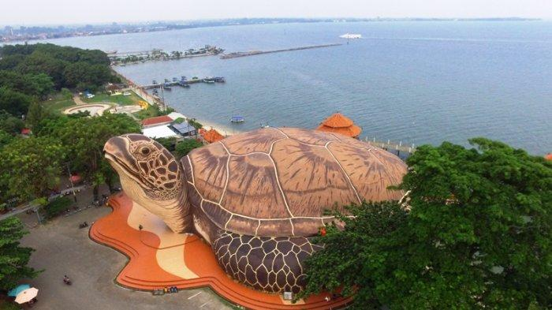

Pantai Kartini
Tempat ini merupakan salah satu objek wisata terkenal yang ada di Jepara, selain Karimunjawa. Bukan hanya menawarkan pemandangan pantai yang indah dan menawan, Pantai Kartini juga memiliki berbagai macam wahana dan atraksi permainan menarik yang sangat digemari oleh anak-anak. Tidak heran jika kemudian lokasi ini menjadi destinasi favorit untuk liburan keluarga.
Pantai Kartini sendiri berada di antara Karimunjawa dan Pulau Panjang. Lokasi tepatnya berada di Desa Bulu, Kecamatan Jepara atau sekitar 2,5 km ke arah barat dari kantor Bupati Jepara. Di tempat ini biasa digelar festival kebudayaan tahunan yang bernama “Lomban”. Acara kebudayaan tersebut dilaksanakan pada tanggal 8 Syawal, seminggu setelah Idulfitri dan hanya dilangsungkan selama satu hari saja.